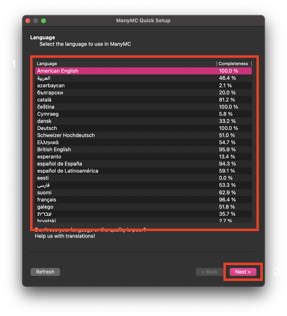
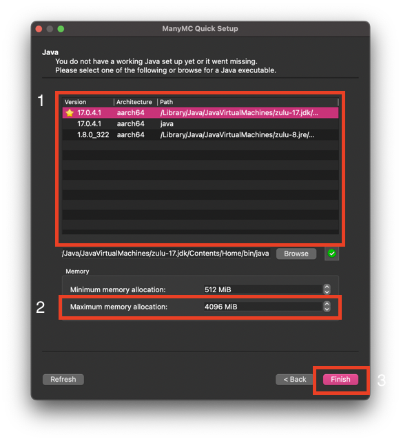
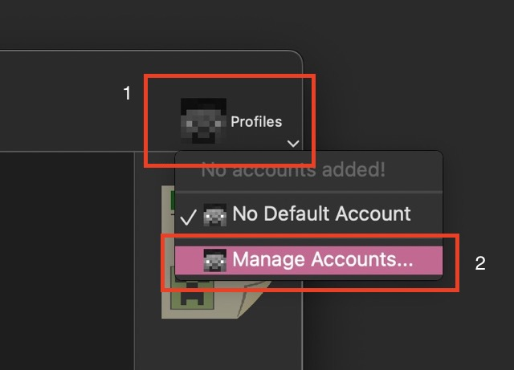
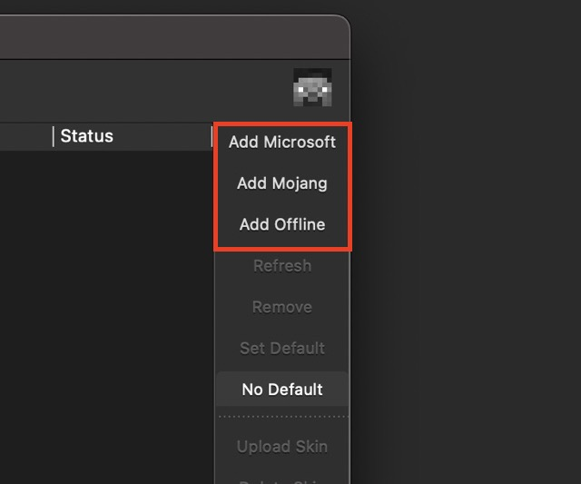
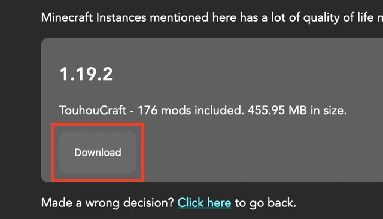
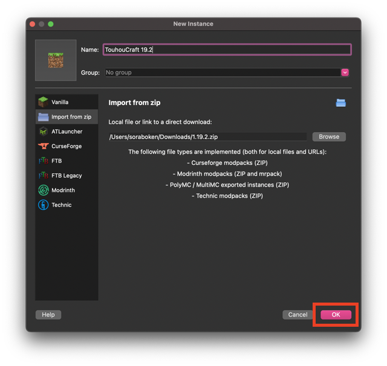
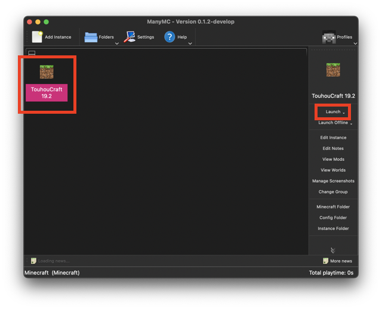
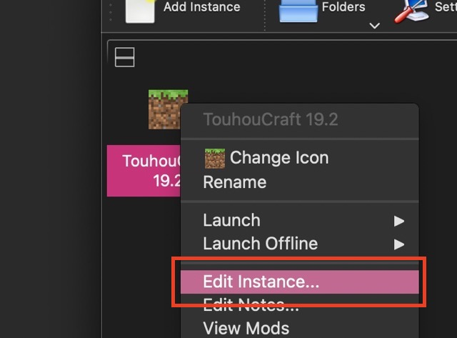
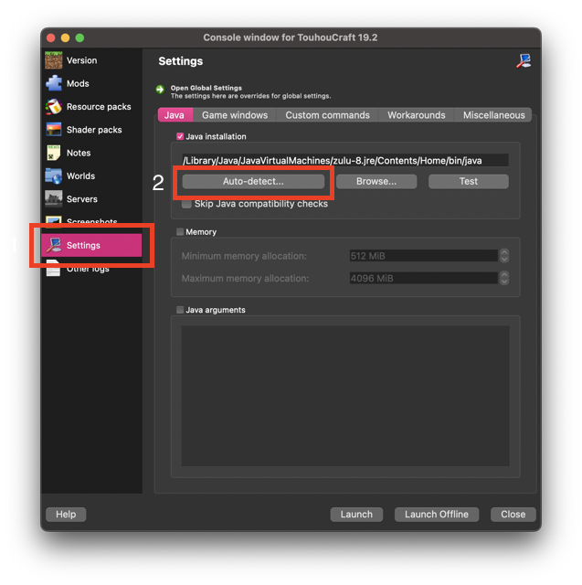
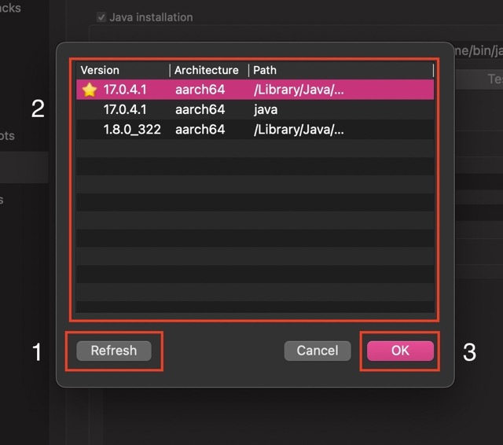

for MultiMC, PolyMC and multiple instances supported launchers.
This page has been redesigned so tech-illteracy people can also follow this guide to setup and play Minecraft in no time.
If you like the straightforward progress, go to the basic version (NOT UP-TO-DATE!).
All the files here are downloaded from trusted sources (Modrinth and CurseForge) and carefully tested for viruses.
If you are the owner of any of these resources and do not want me to distribute along with the instance files, please open an issue or shoot me an email.
Carefully follow each step to make sure the operation goes smoothly.
Make sure to open links in a new tab so you won't lost this page!
You must have Java in order to play Minecraft !
If you haven't, you need to download Java in order to play Minecraft Java Edition. All you need to do is click the link below to start downloading.
Okay, I'm just kidding. You will need to navigate down in order to find the installer. If you use Linux, I'm pretty sure you know what to do.
Find out what kind of Macintosh computer you are using by going to > "About this Mac".
If you have a Mac equipped with an Apple Silicon chip (e.g. M1, M1 Max, etc.), you should download this instead.
After that, run the installer and install Java.
By downloading and installing Azul OpenJDK, you agree to their Terms of Use.
You will need a special kind of launcher... a Minecraft launcher where you can have a lot of Minecraft versions and none of them can conflict with each other.
These launchers does not have Java bundled by default, so make sure you do the steps in the Download Java section!
You happens to not owning a bought Minecraft account, so you will need to grab this launcher instead.
https://nightly.link/UltimMC/Launcher/workflows/main/develop
For Windows user: If the "mmc-cracked-win32" doesn't work, try downloading the "mmc-cracked-win32-5152". I'm not sure what 5152 means.
Terminology: win (Windows), osx (macOS), lin (Linux)
While this screenshot here shows the interface of macOS, this still apply to Windows and Linux.
Step 1: Select your language.
Step 2: Select the installed Java version.
Also set "Maximum memory allocation" to 1/2 of your computer RAM. (e.g. if you computer has 8 GB of RAM, set it to 4096 MiB aka 4 GB)
Step 3: Disable Analytics if asked and needed.
Step 4: Click "Profile" on the top right, then "Manage Account".
Step 5: Click the respectively button to add your account.
Step 6: Log into your account and you should be all set!
This is the part you have been waiting for.
Minecraft Instances mentioned here has a lot of quality of life mods pre-installed. Plus some resource packs to make it prettier! (See Credits for attribution).
Made a wrong decision? Click here to go back.
Step 1: Click the download button above to start downloading.
Step 2: Drag and drop the downloaded file to the launcher window.
If the video doesn't play, you might have autoplay disabled.
Step 3: Click OK to add it to the launcher.
(OPTIONAL) Give it a name to differentiate between instances (in case you might want to add more in the future).
Step 4: Select the instance and click "Launch" to start the game!
There are too much mods included that I unfortunately couldn't include them here.
Make sure you have carefully followed the step above before reading this section!
Issue: I can't launch the game due to "This instance is not compatible with Java version XX."
Resolve: You must select the correct Java version for the instance. Follow these step:
Step 1: Right click on the instance and choose "Edit Instance". "Console window" will be opened if haven't already.
Step 2: Go to Settings, and click on Auto-Detect.
Step 3: Click "Refresh" to refresh installed Java version, select the correct version and click OK.
Step 4: Close the window and launch the game as normal.
Issue: I can't launch any game after I migrated from another multiple instances launcher. (ManyMC and Flatpak users)
Resolve: Follow the step described in these link: